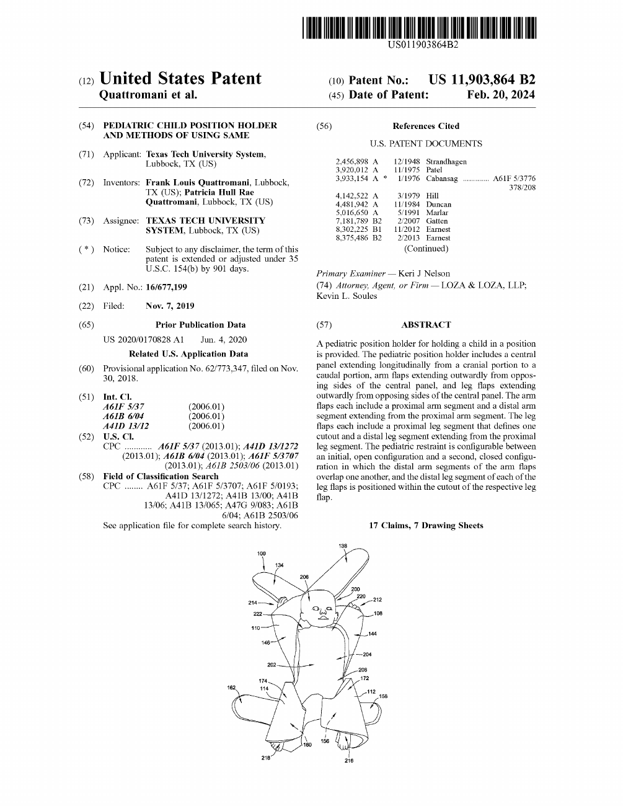

PATENT & REGULATORY REFERENCE
Patent &
device classification.
The patent behind the Pediatric Position Holder, followed by the FDA’s classification reference for pediatric position holders.
THE PATENT
U.S. Patent
11,903,864 B2
Pediatric child position holder and methods of using same
- Granted
- February 20, 2024
- Inventors
- Frank Louis Quattromani
Patricia Hull Rae Quattromani - Assignee at issue
- Texas Tech University System
- Application
- 16/677,199, filed November 7, 2019
- Earlier publication
- US 2020/0170828 A1, published June 4, 2020

FDA DEVICE CATEGORY
Device classification
This table reproduces the FDA Product Classification entry for PRN: pediatric position holder. It describes the device category; it is not a product-specific clearance or approval record.
| Field | FDA reference |
|---|---|
| Device | Pediatric position holder |
| Regulation description | Pediatric position holder. |
| Definition | Device used to physically restrain a pediatric patient for a short surgical or clinical procedure such as circumcision. Not intended for prolonged positioning. |
| Physical state | Made of non-permeable and non-porous material |
| Technical method | The pediatric position holder is a device made of non-permeable and non-porous material and molded with smooth edges for single patient use or multi-patient reuse. Holders that use disposable straps are used to hold an infant or a child in an anatomically correct position during short medical procedures such as circumcision. The holder is used only under constant supervision of a medical professional in a health care facility and is for prescription use only. |
| Target area | Pediatrics |
| Regulation medical specialty | General Hospital |
| Review panel | General Hospital |
| Product code | PRN |
| Premarket review | Office of Gastrorenal, ObGyn, General Hospital, and Urology Devices (OHT3) Drug Delivery and General Hospital Devices, and Human Factors (DHT3C) |
| Submission type | 510(K) Exempt |
| Regulation number | 21 CFR 880.5680 |
| Device class | 1 (Class I) |
| Total Product Life Cycle (TPLC) | TPLC Product Code Report |
| GMP exempt? | No |
The technical-method wording above is the FDA’s category description, including its references to disposable straps and single-patient use or multi-patient reuse. It is not a description of every feature of this holder. The Pediatric Position Holder’s design is unchanged; the team is working with more durable material for reuse.
FDA notes that exemption status and applicable limitations must be confirmed under the relevant regulations. See 21 CFR 880.5680 and 21 CFR 880.9.
Source: FDA Product Classification, PRN. Reviewed October 30, 2026.